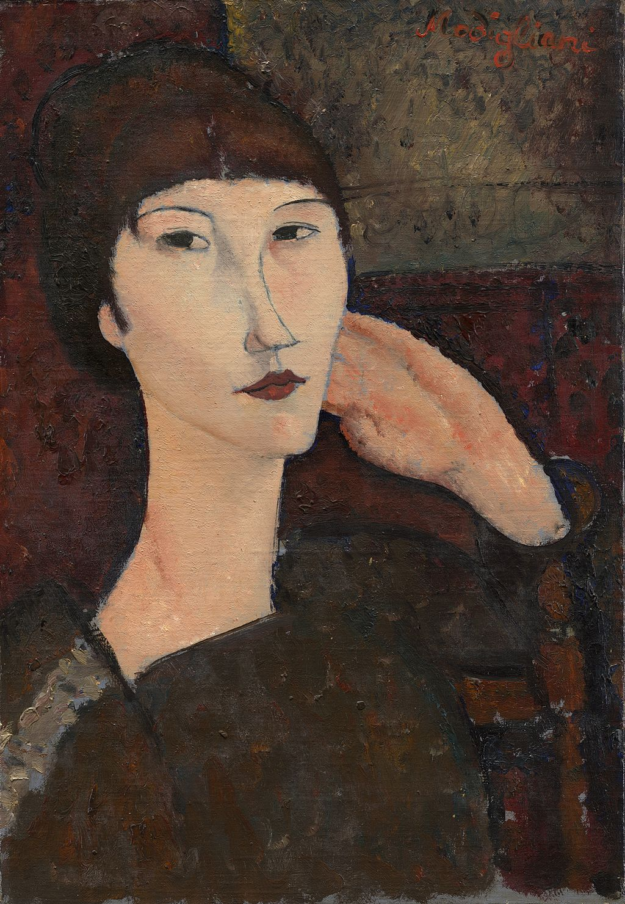

<head>
<meta charset="UTF-8" />
<meta name="keywords" content="drawing, painting" />
<meta name="description" content="drawings by Sunjy" />
<title>Sunjy</title>
<link rel="shortcut icon" type="image/x-icon" href="../../mImages/mCommon/favicon.ico" media="screen" />
<link rel="stylesheet" type="text/css" href="../../mCsses/mCommon/mCssA.css" />
<link rel="stylesheet" type="text/css" href="../../mCsses/mCommon/mCssB.css" />
<link rel="stylesheet" type="text/css" href="../../mCsses/mCommon/mCssC.css" />
<link rel="stylesheet" type="text/css" href="../../mCsses/mCommon/mCssD.css" />
<link rel="stylesheet" type="text/css" href="../../mCsses/mContent/mCssA.css" />
<link rel="stylesheet" type="text/css" href="../../mCsses/mContent/mCssB.css" />
<link rel="stylesheet" type="text/css" href="../../mCsses/mContent/mCssC.css" />
<link rel="stylesheet" type="text/css" href="../../mCsses/mContent/mCssD.css" />
</head>
<script type="text/javascript" src="../../mScripts/mContent/mContentAA.js" /></script>
<script type="text/javascript" src="../../mScripts/mContent/mContentAB.js" /></script>
<script type="text/javascript" src="../../mScripts/mContent/mContentAC.js" /></script>
<script type="text/javascript" src="../../mScripts/mContent/mContentAD.js" /></script>
<script type="text/javascript"></script> 
<script type="text/javascript">
document.write('<div class="mImgAbsolute"></div>');
/*
document.write('<p class="mFontSizeBColor" />From a white paper...</p>');
document.write('<table class="center"><tr><td>');
document.write('');
document.write('</td></tr></table>');
*/
</script>


<script type="text/javascript">
document.write('<p class="mFontSizeBColor" />Adrienne (Woman with Bangs)</p>');
document.write('<p class="mFontSizeSColor" />Adrienne (Woman with Bangs) by Amedeo Modigliani is similar to Modigliani’s other iconic and stylized portraits. Adrienne is depicted with a simplified, elongated oval face, gracefully sculptured nose, and simplified mouth highlight the Modigliani’s interest in African masks.<br><br>Modigliani used portraiture to explore both his psychology and that of his subjects, who were typically fellow artists, friends, or lovers.<br><br>Modigliani drew inspiration from the art of so-called “primitive” cultures, his work often resembling African or Pre-Columbian sculpture.<br><br>Adrienne’s neck is elongated as in may other Modigliani portraits again echoing his appreciation of “primitive” sculptures.<br><br>By 1914 Modigliani abandoned his first love, sculpting and focused solely on his painting.<br><br>This move was precipitated by the difficulty in acquiring sculptural materials due to the outbreak of World War I, and by Modigliani’s physical debilitation.<br><br>Modigliani painted a series of portraits of contemporary artists and friends in Paris, such as Pablo Picasso, Diego Rivera, Jacques, and Jean Cocteau.<br><br>This painting highlights Adrienne’s hair fringe, which is covering her forehead, just above her eyebrows. Adrienne’s Bangs are shaped in an arc around her face.<br><br>Adrienne, the Woman with Bangs, was painted in 1917, the same year in which police closed his only solo exhibition during his lifetime.<br><br>It was closed on the opening day, but it continued after that, only after the removal of his nude paintings from the gallery’s street-front window. His series of nudes, painted in 1917, created a sensation when exhibited in Paris.<br></p>');
document.write('<table class="center" /><tr><td>');
document.write('<br>Modigliani used portraiture to explore both his psychology and that of his subjects, who were typically fellow artists, friends, or lovers.<br><br>Modigliani drew inspiration from the art of so-called “primitive” cultures, his work often resembling African or Pre-Columbian sculpture.<br><br>Adrienne’s neck is elongated as in may other Modigliani portraits again echoing his appreciation of “primitive” sculptures.<br><br>By 1914 Modigliani abandoned his first love, sculpting and focused solely on his painting.<br><br>This move was precipitated by the difficulty in acquiring sculptural materials due to the outbreak of World War I, and by Modigliani’s physical debilitation.<br><br>Modigliani painted a series of portraits of contemporary artists and friends in Paris, such as Pablo Picasso, Diego Rivera, Jacques, and Jean Cocteau.<br><br>This painting highlights Adrienne’s hair fringe, which is covering her forehead, just above her eyebrows. Adrienne’s Bangs are shaped in an arc around her face.<br><br>Adrienne, the Woman with Bangs, was painted in 1917, the same year in which police closed his only solo exhibition during his lifetime.<br><br>It was closed on the opening day, but it continued after that, only after the removal of his nude paintings from the gallery’s street-front window. His series of nudes, painted in 1917, created a sensation when exhibited in Paris.<br>" />');
document.write('</td></tr></table>');
</script>


